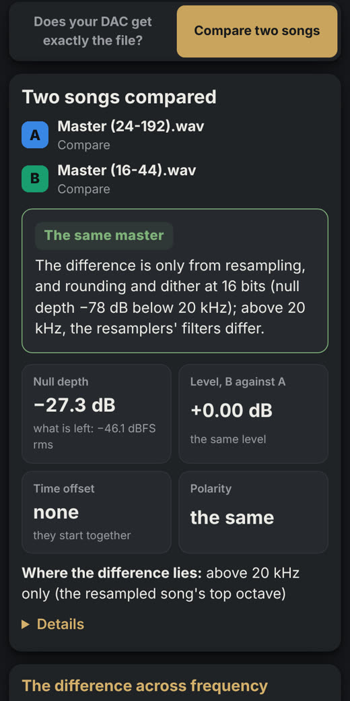
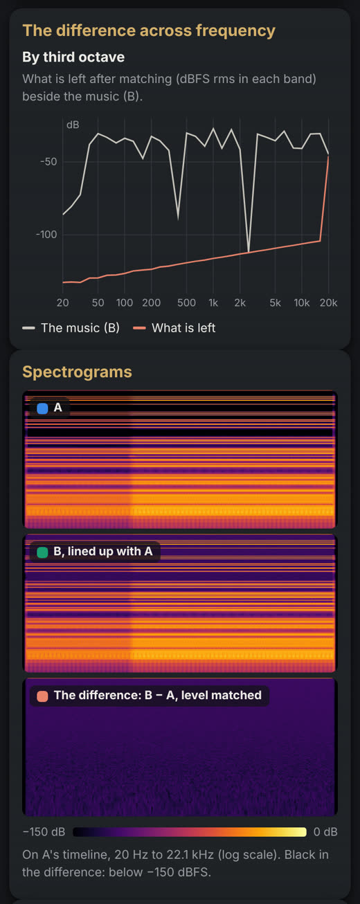

SQ-tool
SQ-tool proves whether a zone's DAC gets exactly what is in the file, sample by sample. It is part of Mandarin: Settings → SQ-tool.
How to use it
- Choose a song from the music folder.
- Choose the zone and press Record. Mandarin plays the song there alone, from its start, and records exactly
what the zone's DAC is fed, to the song's last sample:
- a Mandarin Bridge on an Android device with a USB DAC: what its USB driver feeds the DAC (update the app for it);
- See whether it is bit-perfect, and where it isn't, how: the level, what remains, where in the song — with spectrograms, charts, and the recordings to download.
For a bit-perfect result the zone's Output is Original and its
volume fixed (or the DAC's own): upsampling, DSD from PCM, DSP, volume levelling and a volume in software change the
samples on purpose. A 16-bit song fed to a 32-bit DAC is still bit-perfect: padded with zeros, its values unchanged.
A test, screen by screen
Mandarin Bridge on a FiiO R7, playing a 16-bit FLAC to its USB DAC.


Compare two songs
SQ-tool also compares one song with another, file against file: a 24-bit/192 kHz release against a 16-bit/44.1 kHz one, an original against a remaster. Choose Compare two songs at the top of its page, then song A and song B from the music folder, and Compare.
- Common ground: where the sample rates differ, the higher is resampled to the lower (ffmpeg's soxr resampler at its highest precision); different channel counts are both mixed down to mono. Then, in floating point, B is lined up with A to a fraction of a sample, and its level and polarity are matched.
- The null test: A is subtracted from B. What is left is given against the music (the null depth) and in dBFS, overall, below 20 kHz and per channel, beside the level difference, the time offset and the polarity.
- Where they differ: the difference by third octave, and spectrograms of A, B and the difference.
- Dynamics: each song's peak, rms, crest factor, loudness (LUFS) and loudness range, so that a louder, more compressed remaster shows.
- Downloads: the difference as a WAV file to listen to, as it is or gain-normalised (made loud on purpose), and A and B as compared.
The verdicts
- Identical: the same samples, bit for bit, wherever both have music.
- The same master: below 20 kHz, what is left is at the noise floor of the coarser file (about −96 dBFS at 16 bits, −144 dBFS at 24) or within 10 dB of it, or 90 dB below the music. The difference is then only resampling, rounding and dither, and any level change or inverted polarity, which it says.
- Different only above 20 kHz: neither was resampled, below 20 kHz they null as one master does, and 90% or more of the difference lies above it.
- The same music, a different master: they line up, but more is left. It says whether B is louder or quieter (by 1 LU or more of loudness) and more or less compressed (by 1 LU or more of loudness range, or 1 dB of crest factor).
- Different recordings: nothing lines up, or what is left is within 6 dB of the music.
DSD files aren't compared: SQ-tool compares PCM. A lossy file can be, with a note that its decoder adds
differences of its own. Songs of different lengths are compared where both play. From the command line:
sq-tool compare-files a.flac b.flac.

What it needs
- Mandarin OS and the Linux installer bring what it needs (Python 3 and numpy).
- Installed by hand: add Python 3 and numpy (
sudo apt install python3 python3-numpyon Debian or Ubuntu); until then its page says what is missing.SQTOOL_PYTHONnames another Python to run it with. - Mandarin starts SQ-tool the first time it is opened, on a port of the computer only, behind your sign-in, with
its data in the data folder's
sq-tool. - An update made from Settings brings it (from the first release that carries it); Python and numpy are the computer's to have.